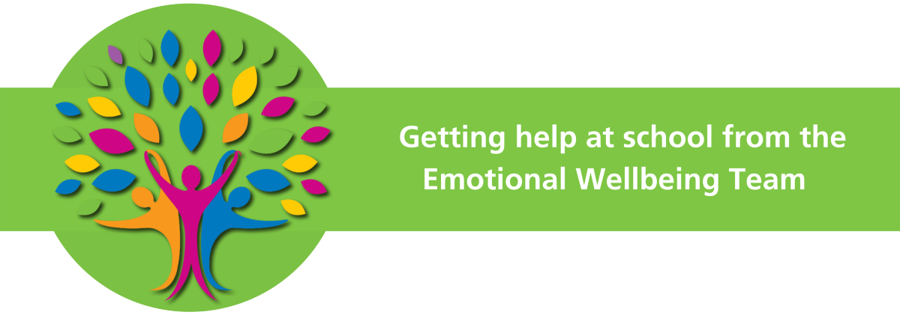

Mental health & wellbeing
portal
Mental health is a state of mental well-being that enables us to cope with the stresses of life, helps us to recognise our strengths and abilities, learn well, work well, and contribute to our community. It is an integral component of health and well-being that underpins our individual and collective abilities to make decisions, build relationships and shape the world we live in.
Wellbeing is defined by the Oxford English Dictionary as “the state of being comfortable, healthy, or happy”. Looking after your wellbeing can promote healthy mental health.
Remember, we all have off days, and it is ok, not to feel ok! But if this feeling persists, we need to speak to someone and get the right support. This feeling will pass, it won’t last forever, but sometimes we just need a little guidance and reassurance to help us along the way. It is tough being a teenager, I know, I was one once!
The suggested 5-ways to wellbeing from the NHS are:
- Connecting with Others:
This helps you to build a sense of self-worth and belonging and gives you an opportunity to be emotionally supported and support others.
Tips: Join a lunchtime/after school club or one outside of school or plan some social gatherings at the weekend or in the holidays.
- Be physically active:
Exercise is not only good for your physical health, but your mental health too. It helps by raising your self-esteem, helps you to set goals or challenges and causes chemical changes in your brain which can positively change your mood!
Tips: Sign up to a sports club at lunch time or after school, try the couch to 5K app NHS Couch to 5K on the App Store (apple.com) NHS Couch to 5K - Apps on Google Play. Join the F51 shred club (speak to the PE department), use the school gym or do an online work out at home. Even a long walk or bike ride is beneficial and free!
Learn new skills or be creative: Challenging yourself can help boost your self-esteem, give you a sense of purpose and help you to connect with others. Being creative can be a great emotional outlet, if you are struggling with managing your emotions try listening to music to suit your mood, write down your thoughts and feelings (Your favourite music artists were inspired by their own thoughts, feelings and experiences…), sketch, draw or cook something (cooking is therapeutic and the end result is usually pretty good!).
Tips: Try learning another language, have a go at juggling or the Rubix cube!
- Give to others: “If you can be anything, be kind”, one of my favourite sayings. Not only is being kind the most wonderful thing you can do for another human, but it also makes you feel good too! Research suggests that acts of kindness or giving (no matter how small) “actually improves” your mental wellbeing. Tips: Volunteer for a local charity or cause, say “thank you” (manners cost nothing) or give the gift of time to friends and family.
- Pay attention to the present moment (mindfulness): Paying attention to the present moment can improve your mental wellbeing. Mindfulness can help you enjoy life more, understand yourself better and connect with the environment around you. Tips: Less screen time, be aware of your surroundings; notice change and use your senses to keep yourself in the present moment How the 5-4-3-2-1 Grounding Technique Can Help You Calm Down (verywellmind.com) this simple exercise can help ease anxiety or a busy mind. Name thoughts and feelings, colour in or do something constructive like a puzzle or build LEGO.
What if I try this and I still feel disconnected from everyone?
“Everyone wants to be connected, to express themselves, and to feel understood. When this doesn’t happen, it can make you feel alone. But no matter what, you deserve to be seen, heard and accepted.
Not everyone is going to get you and that’s okay. But if lots of people aren’t getting you and it’s making you feel low, it’s a good idea to get help. An important first step is to accept who you are. Everyone is unique and sees the world in their own way. The more you accept yourself, even the bits of yourself that some people might not understand, the more comfortable you’ll feel.
When you feel people are judging or misunderstanding you, it can make you feel a lot of horrible emotions. At times like these, it can be easy to blame yourself or think you don’t deserve to be happy with who you are. When you’re in that mindset, it’s easy to spiral and get stuck in these negative thoughts. You might hide yourself away or close yourself off to people. If these negative thoughts feel too much and you can’t get away from that feeling, you might be struggling with low self-esteem or depression. If you’re feeling these negative thoughts are taking over and you’ve hit rock bottom, it’s important to get help now”.
Source: Alone and misunderstood | Youngminds
At school there is lots of support that you can access for the following:
live_help
SEN support
deceased
Bereavement
sentiment_satisfied
Managing emotions
no_meals
Eating disorders
no_drinks
Drug & alcohol support
mindfulness
Low mood and depression
relax
Anxiety
person_raised_hand
Exam stress support
health_and_safety
Self-harm
psychology
LGBTQ+
This can be accessed through speaking to your House Team or a trusted member of staff.
You have your Head of Houses, Deputies, Learning Support Managers, 6th Form Managers and tutors who are available to you daily, to discuss any worries or concerns.
We have Jo who has been the school counsellor for 23 years, she can support you by giving you a safe space to discuss any experiences or challenges you might be facing in your life, which may be impacting your emotional and psychological wellbeing.
I am Mrs Muckett the Student Wellbeing Manager. As well as running Harvey pride and Soul space (alongside Mr Towse) and helping with the young carers group. I offer 1:1 support in the cottage for a variety of interventions including managing emotions, bereavement support, anxiety, self-esteem, low mood and drawing & talking therapy. I offer focused interventions and check-in and chats.
Soul space, which runs daily each lunchtime in the Trafalgar room, offers a safe and quiet space for anyone wanting to meet others, struggling on the playground, wanting to eat lunch in a quiet space or to check-in and chat with myself or Mr Towse.
Peer mentor Support:
Within the school a peer mentoring programme is run by Ms. Ewins, this programme is designed to support students who need a little extra support with things like building confidence, managing school organisation and homework. Peer listeners are older students who provide a sympathetic ear for younger pupils who may prefer to talk someone close to their own age rather than an adult. Please speak to Ms Ewins or your House team if you are interested in becoming a peer mentor or would like support from a peer mentor.
The school works closely with a variety of external charities/agencies to help support our students:

Emotional Wellbeing Team
NHS
Who are we?
We work alongside your school’s Emotional Wellbeing Team. We know, from time to time, people need support with their emotional wellbeing and mental health, so we are here to help. We’re specially trained to share ideas about looking after your mental health, and to offer early help with emotional wellbeing and mental health difficulties. Getting the right support early can help prevent problems getting bigger, so you can enjoy school, home, time with families and friends, and other activities.
Who can we help?
We can work with all students by supporting your school to promote emotional wellbeing and mental health across the whole school community. We can work with you in groups or 1:1 sessions to support you with more specific difficulties.
How we can help
There’s a number of ways we can support you, including:
- Whole school activities and workshops to promote emotional wellbeing and increase your understanding of how to take care of your mental health
- Smaller group and 1:1 sessions for young people with difficulties such as anxiety, exam stress and problems with sleep.
How to get support:
If you would like support with your emotional wellbeing, please speak to your House Team or Mrs Muckett.
You can also find us by calling the NHS Single Point of Access on: 0800 011 3474 (select option 1, then option 3).

South Kent Mind
They offer group support for a variety of mental health issues.
With You
WithYou are commissioned Kent wide to ensure that young people can access a safe space to receive factual, balanced, and up-to-date information about drugs and alcohol. Early Intervention is proven to help keep young people out of the criminal justice system & minimise the harm that drugs can have on health, relationships, education & overall quality of life.
We offer free, confidential and non-judgemental support & facilitation for young people to talk about their experiences & learn how to stay safe.
Salus
Salus recognises that all children and young people are different and may need support to deal with the challenges they face to ensure they can achieve their potential.
Salus offers a huge range of innovative services and evidence-based training programmes with a mission to improve the lives of children and young people.